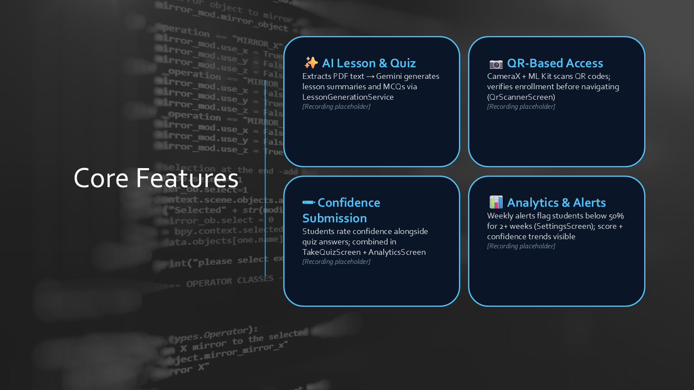

Learning Loop Mobile App
A Year 2, Trimester 2, 2026 Mobile Application Development project that built a teacher-and-student Android learning platform where uploaded PDFs become AI-generated lessons and quizzes, QR codes speed up classroom access, and analytics highlight weak performance early.

Demo Walkthrough
Learning Loop was built as a role-based Android learning platform for teachers and students. The main problem it addressed was repetitive content preparation on the teacher side and fragmented revision support on the student side. Instead of manually writing study guides and practice questions for every module, teachers could upload a PDF and trigger an AI-assisted pipeline that produced lesson summaries, detailed reading content, and multiple-choice quizzes.
The student flow was designed around fast access and immediate feedback. Students could browse lessons by module or scan a QR code in class to jump directly into the relevant content, complete quizzes with instant result highlighting, record confidence alongside answers, and review their own progress through analytics screens. Teachers, in turn, could monitor class averages, quiz participation, weekly performance trends, and below-threshold alerts without needing a separate reporting system.
Under the hood, the application combined Kotlin and Jetpack Compose on the client, MVVM state handling, Supabase for storage and structured data, CameraX plus ML Kit for scanning, and the Gemini API for lesson and quiz generation. The result was a mobile-first workflow that reduced teaching overhead while keeping review, analytics, and intervention features inside one app.
Problem framing
- Targeted the gap between content distribution and assessment by reducing the manual work teachers face when turning module materials into revision resources.
- Positioned the app as a mobile-first learning workflow for both teachers and students, rather than only a student quiz app or only a content repository.
- Focused on structured revision, quick classroom access, and early intervention for students who were consistently underperforming.
Teacher workflow
- Teachers uploaded PDF course material, which the app routed through the Gemini-backed LessonGenerationService to generate lesson summaries, detailed reading content, and multiple-choice quiz questions.
- Generated content was stored in Supabase and linked into module folders so lessons and quizzes were immediately available in the mobile workflow.
- Teachers retained editorial control by reviewing and editing AI-generated quizzes before publishing, instead of treating the model output as final by default.
Student experience
- Students could browse lessons by module or scan QR codes in class to jump directly to a lesson or quiz without manually searching through folders.
- Quiz submission provided instant feedback, with correct answers highlighted green and incorrect answers highlighted red, and the review flow reloaded the student’s saved answers for later study.
- Analytics screens surfaced personal trends, score history, and alert conditions so students could see weak modules before performance decline became harder to recover from.
Architecture and data flow
- Used Kotlin and Jetpack Compose with an MVVM structure, separating composable screens, ViewModels, repositories, and service-layer integrations.
- Supabase handled PostgreSQL data, storage, and REST-style access, while the Gemini API processed uploaded material into structured lesson and quiz JSON.
- When a student submitted a quiz, attempts and answer records were written back to Supabase, then reused for analytics, review screens, and consecutive-week alert logic.
Mobile implementation choices
- Integrated CameraX and ML Kit for QR scanning so students could move from printed or projected codes straight into the right lesson or quiz.
- Handled client-server communication asynchronously through Kotlin coroutines and a safe Supabase call wrapper so the UI stayed responsive during network operations.
- Performed analytics computations such as weekly trends, class averages, student de-duplication, and below-50-percent checks on-device, which reduced backend complexity while keeping the UI reactive.
Testing and engineering
- The report documents 134 unit tests and 40 integration tests, for a combined automated suite of 174 tests.
- A GitHub Actions pipeline ran linting, unit tests, debug APK builds, instrumented Android tests, and release APK builds on pushes and pull requests.
- The implementation also used a structured branching model with feature branches, a shared
devbranch, and integration checks before stable merges.
Measured outcomes
- The experimental evaluation reports that one PDF upload could produce a lesson summary and a 5-question quiz in approximately 2 minutes, compared with an estimated 30 to 45 minutes manually.
- QR-based navigation successfully opened the correct lesson or quiz without manual folder navigation during testing.
- Analytics outputs and below-threshold alerts matched the expected raw data calculations, and alerts cleared automatically when recent performance improved.
Tools and concepts
Project material
This page is based on the final report, the team presentation, and the demo walkthrough, especially the architecture, feature, testing, and evaluation sections.